Perhaps the best-characterized targeting system begins in the endoplasmic reticulum (ER). Most lysosomal, membrane, or secreted pro- teins have an aminoterminal signal sequence that marks them for translocation into the lumen of the ER. More than 100 signal sequences for proteins in this group have been determined (Fig. 26-35). The sequences vary in length (13 to 36 amino acid residues), but all have (1) a sequence of hydrophobic amino acids, typically 10 to 15 residues long, (2) one or more positively charged amino acid residues, usually near the amino terminus preceding the hydrophobic sequence, and (3) a short sequence at the carboxyl terminus (near the cleavage site) that is relatively polar, with amino acid residues having short side chains (especially Ala) predominating in the positions closest to the cleavage site.
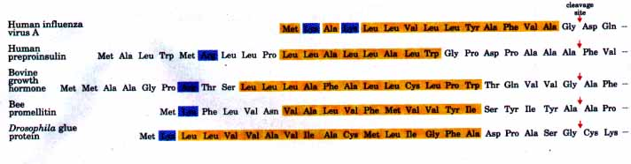
Figure 26-35 Amino-terminal signal sequences of some eukaryotic proteins, directing translocation into the endoplasmic reticulum. The hydrophobic core (yellow) is preceded by one or more basic residues (blue). Note the presence of polar and shortside-chain residues immediately preceding the side-chain residues immediately preceding the cleavage sites (indicated by red arrows).
As originally demonstrated by George Palade, proteins with these signal sequences are synthesized on ribosomes attached to the ER. The signal sequence itself is instrumental in directing the ribosome to the ER. The overall pathway summarized in Figure 26-36 begins with the initiation of protein synthesis on free ribosomes. The signal sequence appears early in the synthetic process because it is at the amino terminus. As it leaves the ribosome, this sequence and the ribosome itself are rapidly bound by a large complex called the signal recognition particle (SRP). This binding event halts elongation when the peptide is about 70 amino acids long and the signal sequence has emerged completely from the ribosome. The bound SRP directs the ribosome with the incomplete polypeptide to a specific set of SRP receptors in the cytosolic face of the ER. The nascent polypeptide is delivered to a peptide translocation complex in the ER, the SRP dissociates from the ribosome, and synthesis of the protein resumes. The translocation complex feeds the growing polypeptide into the lumen of the ER in a reaction that is driven by the energy of ATP. The signal sequence is removed by a signal peptidase within the lumen of the ER. Once the complete protein has been synthesized, the ribosome dissociates from the ER.
In the lumen of the ER, newly synthesized proteins are modified in several ways. In addition to the removal of signal sequences, polypeptide chains fold and disulfide bonds form. Many proteins are also glycosylated.
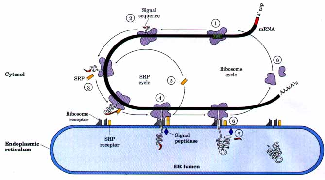
Figure 26-36 Directing eukaryotic proteins with the appropriate signals to the endoplasmic reticulum: the SRP cycle and nascent polypeptide translocation and cleavage. 1 The ribosomal subunits assemble in an initiation complex at the initiation codon and begin protein synthesis. 2 If an appropriate signal sequence appears at the amino terminus of the nascent polypeptide, the SRP binds to the ribosome and halts elongation. 3 The ribosome-SRP complex is bound by receptors on the ER, and 5 the SRP dissociates and is recycled. 6 Protein synthesis resumes, coupled to translocation of the polypeptide chain into the lumen of the ER. 7 The signal sequence is cleaved by a signal peptidase within the lumen of the ER 8 The ribosome is recycled. The SRP is a rod-shaped complex containing a 300 nucleotide RNA (called 7SL-RNA) and six dif ferent proteins, with a combined molecular weight of 325.000. One protein subunit of the SRP binds directly to the signal sequence, inhibiting elongation by sterically blocking entry of aminoacyltRNAs and inhibiting peptidyl transferase. The SRP receptor is a heterodimer of a (Mr 69,000) and b (Mr 30,000) subunits.
Glycosylation Plays a Key Role in Protein Targeting Glycosylated proteins, or glycoproteins, often are linked to their oligosaccharides through Asn residues. These N-linked oligosaccharides are very diverse (Chapter 11), but the many pathways by which they form all have a common first step. A 14 residue core oligosaccharide (containing two N-acetylglucosamine, nine mannose, and three glucose residues) is transferred from a dolichol phosphate donor molecule to certain Asn residues on the proteins.
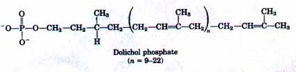
The core oligosaccharide is built up on the phosphate group of dolichol phosphate (an isoprenoid derivative) by the successive addition of monosaccharide units. Once this core oligosaccharide is complete, it is enzymatically transferred from dolichol phosphate to the protein (Fig. 26-37). The transferase is located on the lumenal face of the ER and thus does not catalyze glycosylation of cytosolic proteins. After the transfer, the core oligosaccharide is trimmed and elaborated in different ways on different proteins, but all N-linked oligosaccharides retain a pentasaccharide core derived from the original 14 residue oligosaccharide (Fig. 26-37). Several antibiotics interfere with one or more steps in this process. The best-characterized is tunicamycin (Fig. 26-38), which blocks the first step.
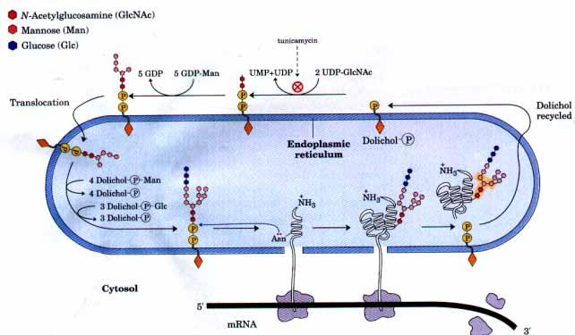
Figure 26-37 Synthesis of the core oligosaccharide of glycoproteins. The core oligosaccharide is built up in a series of steps as shown. The first few steps occur on the cytosolic face of the ER. Completion occurs within the lumen of the ER after a translocation step (upper left) in which the incomplete oligosaccharide is moved across the membrane. The mechanism of this translocation is not shown. The synthetic precursors that contribute additional mannose and glucose residues to the growing oligosaccharide in the lumen are themselves dolichol phosphat-eOderivatives. The dolichol-?Man and dolichol P -Glc are synthesized from dolichol phosphate and GDP-mannose or UDP-glucose, respectively. After it is transferred to the protein, the core oligosaccharide is further modified in the ER and the Golgi complex in pathways that differ for different proteins. The five sugar residues enclosed in a beige screen (lower right) are retained in the final structure of all N-linked oligosaccharides. In the first step in the construction of the N-linked oligosaccharide moiety of a glycoprotein, the core oligosaccharide is transferred from dolichol phosphate to an Asn residue of the protein within the lumen of the ER. The released dolichol pyrophosphate is recycled.
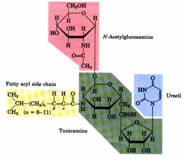 |
Figure 26-38 The structure of tunicamycin, an antibiotic produced by Streptomyces that mimics UDP-N-acetylglucosamine and blocks the first step in the synthesis of the core oligosaccharide of glycoproteins on dolichol phosphate (see Fig. 26-37). Tunicamycin is actually a family of antibiotics produced by (and isolated as a mixture from) Streptomyces lysosuperficens. They all contain uracil, Nacetylglucosamine, an 11 carbon aminodialdose called tunicamine, and a fatty acyl side chain. The structure of the fatty acyl side chain varies in the difierent compounds within the family. In addition to the variation in length of the fatty acyl side chain (indicated in the figure), some homologs lack the isopropyl group at the end and/or a,/3-unsaturation. |
| Proteins are moved from the ER to the
Golgi complex in transport vesicles (Fig. 26-39). In the
Golgi complex, O-linked oligosaccharides are
added and N-linked oligosaccharides are further
modified. By mechanisms only partially understood,
proteins are also sorted here and sent to their final
destinations (Fig. 26-39). Within the Golgi complex, the
processes that segregate proteins destined for the cell
exterior from those destined for the plasma membrane or
lysosomes must distinguish between proteins on the basis
of structural features other than the signal sequence,
which was removed in the lumen of the ER. This sorting process is perhaps best understood in the case of hydrolases destined for transport to lysosomes. Upon arrival in the Golgi complex from the ER, some as yet undetermined feature of the threedimensional structure of these hydrolases (sometimes called a "signal patch") is recognized by a phosphotransferase that catalyzes the phosphorylation of certain mannose residues in the enzymes' oligosaccharides (Fig. 26-40). The presence of one or more mannose-6-phosphate residues in their N-linked oligosaccharides is the structural signal that targets these proteins to lysosomes. A receptor protein in the membrane of the Golgi complex recognizes this mannose-6-phosphate signal and binds the hydrolases so marked. Vesicles containing these receptor-hydrolase complexes bud from the trans side of the Golgi complex and make their way to sorting vesicles. Here, the receptorhydrolase complexes dissociate in a process facilitated by the lower pH within the sorting vesicles and by a phosphatase-catalyzed removal of phosphate groups from the mannose-6-phosphate residues. The receptor is returned to the Golgi complex, and vesicles containing the hydrolases bud from the sorting vesicles and move to the lysosomes. In cells treated with tunicamycin (Fig. 26-38), hydrolases normally targeted for lysosomes do not reach their destination but are secreted instead, confirming that the N-linked oligosaccharide plays a key role in targeting these enzymes to lysosomes. |
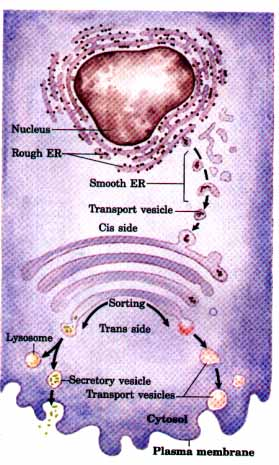 Figure 26-39 The pathway taken by proteins destined for lysosomes, the plasma membrane, or secretion. Proteins are moved from the ER to the cis side of the Golgi complex in transport vesicles. Sorting occurs primarily in the trans side of the Golgi complex. |
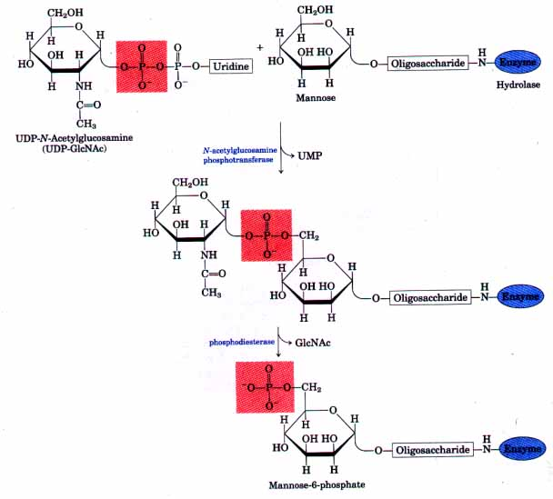
Figure 26-40 The two-step process by which mannose residues on lysosome-targeted enzymes, such as hydrolases, are phosphorylated. N-Acetylglucosamine phosphotransferase recognizes some as yet unidentified structural feature of lysosome-destined hydrolases.
For proteins destined for the plasma membrane or for secretion, and for those destined to reside permanently in the ER or the Golgi complex, the signals are less well understood. These targeting pathways are not impeded by tunicamycin, indicating that the signals are not carbohydrates.
Cellular proteins targeted to the mitochondria, chloroplasts, or nucleus use their own distinct signal sequences. For mitochondria and chloroplasts, the signal sequences are again found at the amino terminus of the proteins and are cleaved once the proteins arrive at their fmal destinations. The signal sequences that target some proteins to the nucleus (an example is the sequence -Pro-Lys-Lys-Lys-ArgLys-Val-) are located internally and are not cleaved. These signals permit proteins such as DNA polymerases and RNA polymerases to enter the nucleus rapidly through nuclear pores.
Bacteria must also target some proteins to the inner or outer membranes, the periplasmic space between the membranes, or the extracellular medium (secretion). This targeting uses signal sequences at the amino terminus of the proteins much like those found on eukaryotic proteins targeted to the ER (Fig. 26-41).
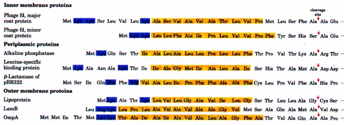
Figure 26-41 Signal sequences used for targeting to different locations in bacteria. Basic amino acids (blue) near the amino terminus and hydrophobic core amino acids (yellow) are highlighted. The cleavage sites marking the ends of the signal sequences are marked by red arrows. Note that the inner membrane (see Fig. 2-6) is where phage fd coat proteins and DNA are assembled into phage particles.
Some proteins that are translocated through one or more membranes to reach their final destinations must be maintained in a distinct "translocation-competent" conformation until this process is complete. The functional conformation is assumed after translocation, and proteins purified in this final form are often found to be no longer capable of translocation. There is growing evidence that the translocation conformation is stabilized by a specialized set of proteins in all bacterial cells. These bind to the protein to be translocated while it is being synthesized, preventing it from folding into its final threedimensional structure. In E. coli, a protein called trigger factor (Mr 63,000) appears to facilitate the translocation of at least one outer membrane protein through the inner membrane.
Some proteins are imported into certain cells from the surrounding medium; these include low-density lipoprotein (LDL), the iron-carrying protein transferrin, peptide hormones, and circulating proteins that are destined to be degraded. These proteins bind to receptors on the outer face of the plasma membrane. The receptors are concentrated in invaginations of the membrane called coated pits, which are coated on their cytosolic side with a lattice made up of the protein clathrin (Fig. 26-42). Clathrin forms closed polyhedral structures, and as more of the receptors become occupied with target proteins, the clathrin lattice grows until a complete membrane-bounded endocytic vesicle buds off the plasma membrane and moves into the cytoplasm.
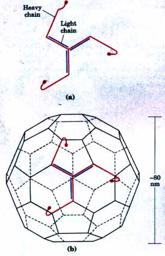 |
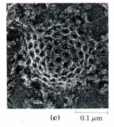 Figure 26-42 Clathrin is a trimer of three light (L) chains (Mr 35,000) and three heavy (H) chains (Mr. 180,000). (a) The (HL)3 clathrin unit is organized as a three-legged structure called a triskelion. (b) Triskelions have a propensity to assemble into polyhedral lattices. (c) Electron micrograph of a coated pit on the cytosolic face of the plasma membrane of a fibroblast. |
The clathrin is quickly removed by uncoating enzymes, and the vesicles fuse with endosomes. The pH of endosomes is lowered by the activity of V-type ATPases in their membranes (see Table 10-5), producing an environment that facilitates dissociation of receptors from their target proteins. Proteins and receptors then go their separate ways, their fates varying according to the system. Transferrin and its receptor are eventually recycled (Fig. 26-43). Some hormones, growth factors, and immune complexes are degraded along with their receptors after they have elicited the appropriate response. LDL is degraded after the associated cholesterol has been delivered to its destination, but its receptor is recycled (see Fig. 20-39).
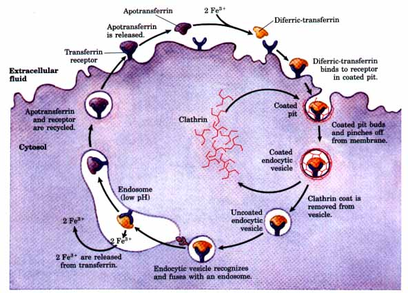
Figure 26-43 The transferrin cycle transports iron into cells. Diferric-transferrin (transferrin containing two bound Fe3+ ions) is bound by receptors in coated pits (top right), which form endocytic vesicles coated with clathrin. Uncoating is catalyzed by ATP-dependent enzymes. This is followed by receptor-mediated fusion of the vesicles with endosomes (bottom). The low pH within the endosome causes dissociation of the Fe3+ . At low pH, the receptor retains a high affinity for apotransferrin, which is returned to the cell surface still bound to the receptors. Here the neutral pH lowers the affinity of the receptor for apotransferrin, permitting its dissociation. At neutral pH, the receptor has a high affinity for diferric-transferrin, allowing more molecules of diferric-transferrin to bind, thereby continuing the cycle.
Receptor-mediated endocytosis is exploited by some viruses to gain entry to cells. Influenza virus enters cells this way. HIV, the virus that causes AIDS, also binds to specific receptors on the cell surface and may gain entry by endocytosis. In humans, the receptor that binds HIV, known as CD4, is a glycoprotein found primarily on the surface of immune system cells called helper T cells. CD4 is normally involved in the complex communication between cells of the immune system that is required to execute the immune response.
Proteins are constantly being degraded in all cells to prevent the buildup of abnormal or unwanted proteins and to facilitate the recycling of amino acids. Degradation is a selective process. The lifetime of any particular protein is regulated by proteolytic systems specialized for this task, as opposed to proteolytic events that might occur during posttranslational processing. The half lives of different proteins can vary from half a minute to many hours or even days in eukaryotes.
| Most proteins are turned over rapidly in
relation to the lifetime of a cell, although a few stable
proteins (such as hemoglobin) can last for the life span
of a cell (about 110 days for an erythrocyte). Proteins
that are degraded rapidly include those that are
defective because of one or more incorrect amino acids
inserted during synthesis or because of damage that
occurs during normal functioning. Also targeted for rapid
turnover are many enzymes that act at key regulatory
points in metabolic pathways. Defective proteins and those with characteristically short half lives are generally degraded in both bacteria and eukaryotes by ATPdependent cytosolic systems. A second system in vertebrates operates in lysosomes and serves to recycle membrane proteins, extracellular proteins, and proteins with characteristically long half lives. In E. coli, many proteins are degraded by an ATP-dependent protease called La. The ATPase is activated only in the presence of defective proteins or those slated for rapid turnover; two ATP molecules are hydrolyzed for every peptide bond cleaved. The precise molecular function of ATP hydrolysis during peptide-bond cleavage is unclear. Once a protein is reduced to small inactive peptides, other ATP-independent proteases complete the degradation process. In eukaryotes, the ATP-dependent pathway is quite different. A key component in this system is the 76 amino acid protein ubiquitin, so named because of its presence throughout the eukaryotic kingdoms. One of the most highly conserved proteins known, ubiquitin is essentially identical in organisms as different as yeasts and humans. Ubiquitin is covalently linked to proteins slated for destruction via an ATP-dependent pathway involving three separate enzymes (Fig. 26-44). How attachment of one or more molecules of ubiquitin to a protein targets that protein for proteolysis is not yet understood. The ATP-dependent proteolytic system in eukaryotes is a large complex (Mr≥1 × 106). The mode of action of the protease component of the system and the role of ATP are unknown. The signals that trigger ubiquitination are also not all understood, but one simple one has been found. The amino-terminal residue (i.e., the residue remaining after removal of methionine and any other proteolytic processing of the amino-terminal end) has a profound influence on the half lives of many proteins (Table 26-9). These amino-terminal signals have evidently been conserved during billions of years of evolution; the signals are the same in bacterial protein degradation systems and in the human ubiquitination pathway. The degradation of proteins is as important to a cell's survival in a changing environment as is the protein synthetic process, and much remains to be learned about these interesting pathways. |
Figure 26-44 The three-step process by which ubiquitin is attached to a protein targeted for destruction in eukaryotes. Two different enzymeubiquitin intermediates are involved. The free carboxyl of ubiquitin's carboxyl-terminal Gly residue is ultimately linked through an amide (isopeptide) bond to an ε-amino group of a Lys residue of the target protein. 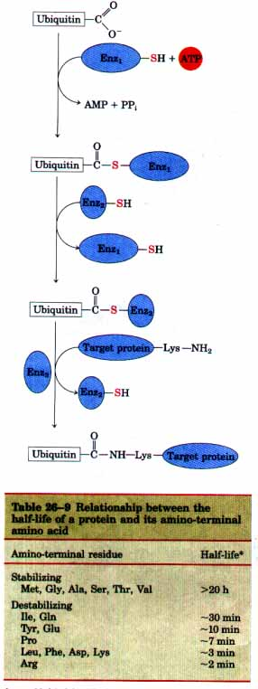 Source: Modified from Bachmair, A., Finley, D., & Varshavsky, A. (1986) In vivo half-life of a protein is a function of its amino-terminal residue. Science 234, 179-186. * Half lives were measured in yeast for a single protein that was modified so that in each experiment it had a different amino-terminal amino acid residue. (See Chapter 28 for a discussion of techniques used to engineer proteins with altered amino acid sequences. ) Half-lives may vary for difierent proteins and in difierent organisms, but this general pattern appears to hold for all organisms: amino acids listed here as stabilizing when present at the amino terminus have a stabilizing efiect on proteins in all cells. |